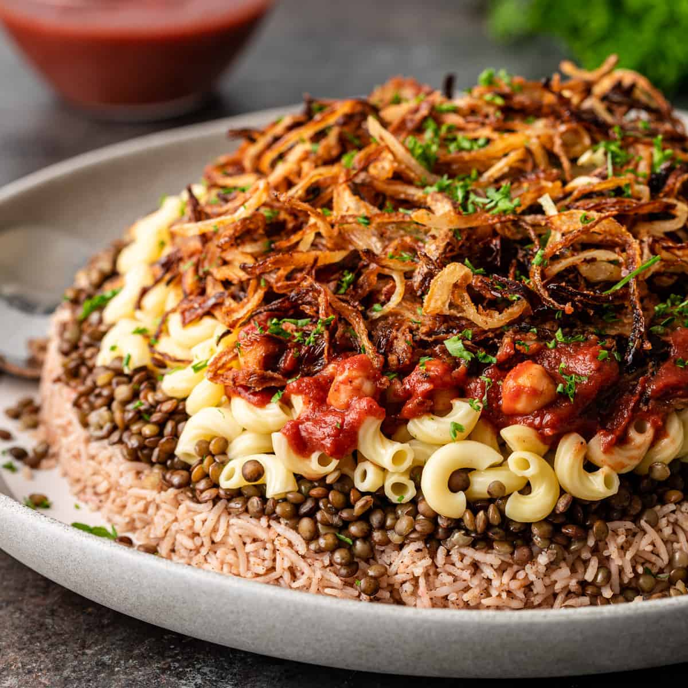
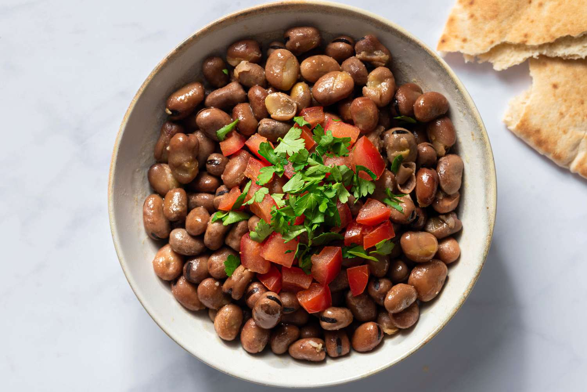
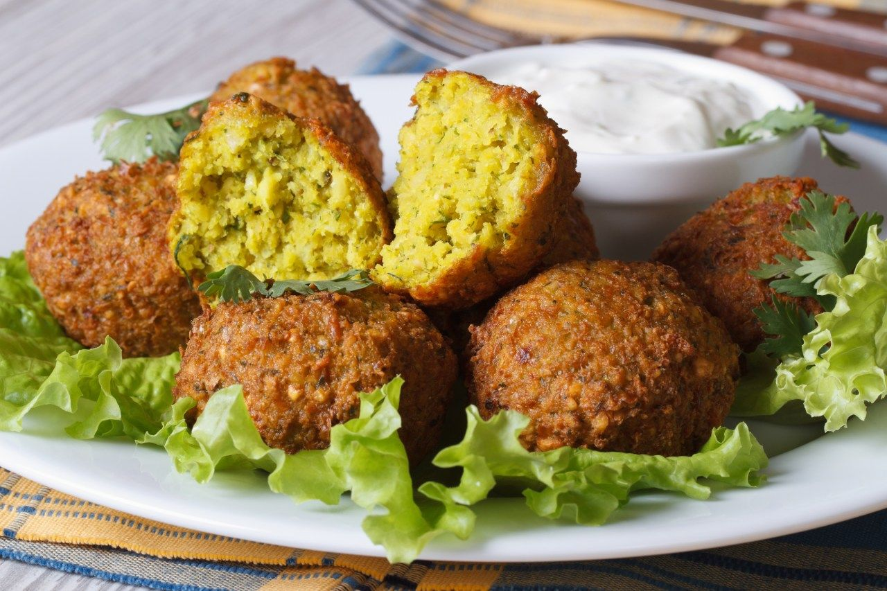

Pratos Típicos
A culinária do Egito é bastante diversificada e reflete a longa história e as influências culturais do país. Ela combina tradições africanas, árabes e mediterrâneas, resultando em sabores únicos e marcantes. Os alimentos costumam ser preparados com ingredientes simples, mas muito bem temperados. O uso de grãos, legumes e especiarias é bastante comum no dia a dia. Além disso, há opções tanto leves quanto mais elaboradas, atendendo diferentes ocasiões. A comida também tem forte ligação com a cultura e os costumes locais. Dessa forma, a culinária egípcia oferece uma experiência rica e variada para quem a conhece.
Koshari
O koshari é considerado o prato nacional do Egito e um dos mais populares entre a população local. Ele é uma mistura bastante nutritiva de arroz, macarrão, lentilhas e grão-de-bico, geralmente coberta com molho de tomate temperado e cebolas fritas crocantes. Apesar de parecer uma combinação incomum, o resultado é um prato muito saboroso e equilibrado. É bastante consumido como refeição principal, especialmente por ser acessível e barato. O koshari reflete a diversidade cultural do país, com influências de diferentes regiões. É facilmente encontrado em restaurantes e também em barracas de rua. Sua popularidade faz dele um verdadeiro símbolo da culinária egípcia.


Ful Medames
O ful medames é um prato tradicional feito à base de favas cozidas e temperadas com azeite, alho, limão e especiarias. Muito consumido no café da manhã, ele é uma opção simples, nutritiva e bastante comum no dia a dia dos egípcios. Pode ser servido com pão árabe, ovos cozidos ou vegetais. Sua origem é antiga, sendo consumido desde os tempos do Egito antigo. É um alimento rico em proteínas e muito valorizado por sua praticidade. O prato também é bastante popular em outros países do Oriente Médio. No Egito, é considerado uma refeição básica e essencial.
Faláfel
O falafel é um bolinho frito feito principalmente de grão-de-bico ou favas, muito consumido no Egito e em toda a região do Oriente Médio. No Egito, ele costuma ser preparado com fava, o que o diferencia de outras versões. É crocante por fora e macio por dentro, sendo servido com molhos, saladas e pão. Frequentemente é consumido como lanche ou refeição rápida. Além de saboroso, é uma opção vegetariana bastante nutritiva. É muito popular em comidas de rua e restaurantes locais. Seu sabor marcante faz dele um dos pratos mais conhecidos da culinária egípcia.

Molokhia
A molokhia é um prato tradicional preparado com folhas verdes cozidas, geralmente servidas como uma espécie de sopa espessa. Ela costuma ser acompanhada de arroz e carne, como frango ou coelho. Seu sabor é único e pode causar estranhamento para quem experimenta pela primeira vez. No entanto, é muito apreciada pelos egípcios e faz parte de sua cultura alimentar. O preparo envolve temperos como alho e coentro, que intensificam o sabor. É uma refeição bastante comum em almoços familiares. A molokhia representa bem a tradição e os costumes da culinária do Egito.